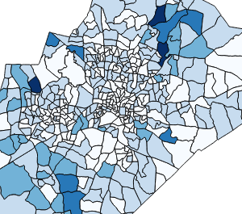

As you can see, the Wake BlockGroup 2010 layer's features are now styled in one of 5 intervals according to it's value of TOTAL_POP.
The darker tones of blue represent higher values of population, and it does down to the white color, which represents lower values of population.

This map is not very useful as the sizes of the group blocks polygons are very different. We should represent population density instead.
Instead of using one of the layer's fields for creating the classes, one can use an expression. An expression allows, for example, to combine two or more fields, or to "pre-process" the values before using them as classes.
In the next steps, we will use an expression to create population density values.